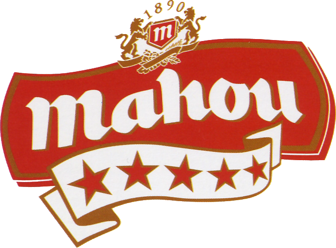
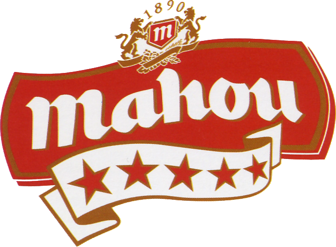

COMUNICADO OFICIAL: LOS PRINCIPALES CLUBES EUROPEOS DE FÚTBOL ANUNCIAN LA NUEVA SUPERLIGA
Doce de los clubes de fútbol más importantes de Europa anuncian hoy que han llegado a un acuerdo para formar una nueva competición, la Superliga, gobernada por sus Clubes Fundadores.
El AC Milan, el Arsenal FC, el Atlético de Madrid, el Chelsea FC, el FC Barcelona, el FC Internazionale Milano, la Juventus FC, el Liverpool FC, el Manchester City, el Manchester United, el Real Madrid CF y el Tottenham Hotspur se han
unido como Clubes Fundadores. Se invitará a otros tres clubes para que puedan unirse antes de la temporada inaugural que empezará lo antes posible.
De cara al futuro, los Clubes Fundadores esperan mantener conversaciones con la UEFA y la FIFA buscando las mejores soluciones para la Superliga y para el conjunto del fútbol mundial.
La creación de la nueva Liga se produce cuando la pandemia mundial ha acelerado la inestabilidad del actual modelo económico del fútbol europeo. Durante años, los Clubes Fundadores han tenido como objetivo mejorar la calidad y la
intensidad de las competiciones europeas existentes y, en particular, crear un torneo en el que los mejores clubes y jugadores puedan competir entre ellos de manera más frecuente.
La pandemia ha desvelado que una visión estratégica y un enfoque comercial son necesarias para aumentar el valor y las ayudas en beneficio de la pirámide del fútbol en su conjunto. En los últimos meses se ha mantenido un diálogo intenso
con los órganos de gobierno sobre el futuro formato de las competiciones europeas. Los Clubes Fundadores creen que las soluciones propuestas por los reguladores no resuelven las cuestiones fundamentales, que son tanto la necesidad de
ofrecer partidos de más calidad, como obtener recursos financieros adicionales para todo el mundo del fútbol.
Formato de la competición
-Participarán 20 clubes, los 15 Clubes Fundadores y otros cinco equipos adicionales que se clasificarán anualmente sobre la base del rendimiento de la temporada anterior;
-Todos los partidos se jugarán entre semana, todos los clubes seguirán compitiendo en sus respectivas ligas nacionales, preservando así el calendario tradicional que está en el centro de la vida de los clubes;
-La temporada comenzará en agosto con la participación de los clubes en dos grupos de diez, que jugarán partidos de ida y vuelta; los tres primeros de cada grupo se clasificarán automáticamente para los cuartos de final. Los equipos que
terminen en cuarta y quinta posición jugarán un playoff adicional a doble partido. Posteriormente se jugarán playoffs de doble partido a partir de cuartos para llegar a la final, que se disputará a partido único, a finales de mayo, en una
sede neutral.
Tan pronto como sea posible, tras el inicio de la competición masculina, se pondrá en marcha la correspondiente liga femenina, lo que contribuirá al avance y desarrollo del fútbol femenino.
Este nuevo torneo anual proporcionará un crecimiento económico significativamente mayor, lo que permitirá apoyar al fútbol europeo a través de un compromiso a largo plazo, de que las aportaciones a la solidaridad, crezcan en línea con los
ingresos de la nueva liga europea. Los pagos de solidaridad serán mayores que los actualmente generados por el sistema europeo de competición y se prevé que superen los 10 000 millones de euros a lo largo del periodo de compromiso de los
Clubes. Por otra parte, la nueva competición se construirá con criterios financieros de sostenibilidad, ya que todos los Clubes Fundadores se comprometen a adoptar un marco de gasto. A cambio de su compromiso, los Clubes Fundadores
recibirán, en conjunto, un pago de una sola vez de 3.500 millones de euros dedicado únicamente a acometer planes de inversión en infraestructuras y compensar el impacto de la pandemia del COVID.
Florentino Pérez, Presidente del Real Madrid CF y Presidente de la Superliga, dijo:
"Vamos a ayudar al fútbol a todos los niveles a ocupar el lugar que le corresponde en el mundo. El fútbol es el único deporte global en el mundo con más de 4.000 millones de seguidores y nuestra responsabilidad como grandes clubes es
responder a los deseos de los aficionados".
Respaldando la nueva liga europea, Andrea Agnelli, Presidente de la Juventus y Vicepresidente de la Superliga dijo:
"Nuestros 12 Clubes Fundadores representan miles de millones de aficionados en todo el mundo. Nos hemos unido en este momento crítico, para que la competición europea se transforme, dando al deporte que amamos unos fundamentos que sean
sostenibles para el futuro, aumentando sustancialmente la solidaridad, y dando a los aficionados y a los jugadores amateurs un sueño y unos partidos de máxima calidad que alimentarán su pasión por el fútbol".
Joel Glazer, co Presidente del Manchester United y Vicepresidente de la Superliga, dijo:
"Al reunir a los mejores clubes y jugadores del mundo para que jueguen entre sí durante toda la temporada, la Superliga abrirá un nuevo capítulo para el fútbol europeo, asegurando una competición e instalaciones de primer nivel, y un
mayor apoyo financiero para la pirámide del fútbol en general".


 
